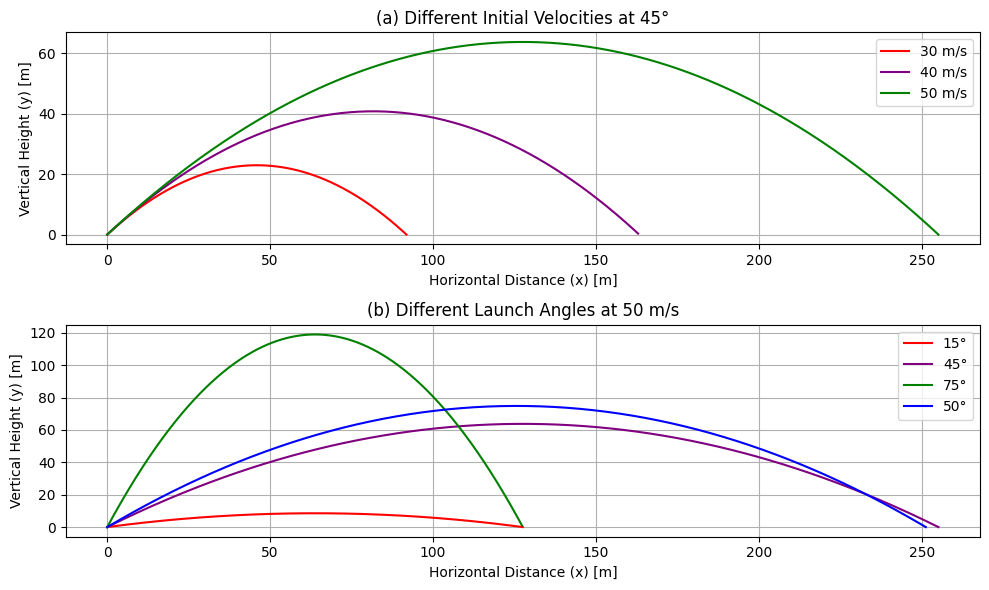

Problem 1
Theoretical Foundation
Derivation of Governing Equations of Motion
Projectile motion is governed by Newton's Second Law:
\(F=ma\)
In the absence of air resistance, the only force acting on a projectile is gravity. Assuming motion in two dimensions (horizontal \(x\) and vertical \(y\)), we express the acceleration components as:
\(a_x=0,\quad a_y=-g\)
where \(g\) is the acceleration due to gravity.
Using kinematic equations:
\(v=v_0+at\)
\(s=s_0+v_0t+\frac{1}{2}at^2\)
For horizontal motion:
\(v_x=v_0\cos\theta\)
\(x=v_0\cos\theta\cdot t\)
For vertical motion:
\(v_y=v_0\sin\theta-gt\)
\(y=v_0\sin\theta\cdot t-\frac{1}{2}gt^2\)
where: - \(v_0\) is the initial velocity, - \(\theta\) is the launch angle, - \(t\) is time.
Solving the Basic Differential Equations
The motion of the projectile can also be described using differential equations:
Integrating both equations:
A second integration gives the position equations:
Effect of Initial Conditions on Trajectory
Time of Flight
Setting \(y=0\) to find the total flight time:
Solving for \(t\):
Maximum Height
At the peak of the motion, \(v_y=0\):
Solving for \(t_{max}\):
Substituting into the vertical position equation:
Range of the Projectile
The range \(R\) is given by:
Substituting \(t_{total}=\frac{2v_0\sin\theta}{g}\):
Observations
- The range is maximized at \(\theta=45^\circ\).
- Doubling the initial velocity quadruples the range.
- Increasing \(g\) decreases the range.
These equations provide a foundation for further analysis, including air resistance and varying gravitational fields.
Analysis of the Range
Dependence of Range on Angle of Projection
The range \(R\) of a projectile launched with an initial velocity \(v_0\) at an angle $ heta$ from the horizontal is given by the equation:
where: - \(v_0\) is the initial velocity, - $ heta$ is the angle of projection, - \(g\) is the acceleration due to gravity.
Analysis:
- The range \(R\) is maximized when \(\sin 2 heta = 1\), which occurs at \(2 heta = 90^\circ\), or \(heta = 45^\circ\).
- For angles \(heta > 45^\circ\) or \(heta < 45^\circ\), the range decreases.
- The function \(\sin 2 heta\) is symmetric about \(45^\circ\), meaning that angles \(heta\) and \(90^\circ - heta\) produce the same range.
Effect of Initial Velocity and Gravitational Acceleration on Range
Since the range equation is:
we can analyze the influence of \(v_0\) and \(g\):
Effect of Initial Velocity \(v_0\):
- The range \(R\) increases quadratically with \(v_0\), meaning that doubling the initial velocity results in a fourfold increase in range.
Effect of Gravitational Acceleration \(g\):
- The range \(R\) is inversely proportional to \(g\), meaning that increasing gravity decreases the range.
- On celestial bodies with lower \(g\) (e.g., the Moon), the projectile travels much farther.
Conclusion
- The range depends on both the angle and the initial velocity.
- The maximum range occurs at \(45^\circ\).
- Increasing the initial velocity significantly increases the range.
- A higher gravitational acceleration reduces the range.
These principles are crucial in physics, engineering, and ballistics, influencing projectile motion analysis in various fields.
Practical Applications of Differential Equations
1. Suspension Bridges
Suspension bridges are modeled using second-order differential equations that describe the motion and forces acting on the structure. A common equation used in modeling is:
where: - \(E\) is the Young’s modulus, - \(I\) is the second moment of area, - \(y(x)\) is the deflection of the bridge deck, - \(q(x)\) represents the distributed load.
The natural frequency of oscillation is given by:
where \(k\) is the stiffness of the cables and \(m\) is the mass per unit length.
2. Energy Harvesting Systems
Energy harvesting systems use vibrational energy to generate power, often modeled as a damped harmonic oscillator:
where: - \(m\) is the mass of the system, - \(c\) is the damping coefficient, - \(k\) is the stiffness, - \(F(t)\) represents the external driving force.
A piezoelectric harvester converts mechanical energy into electrical energy, where the governing equation includes an electromechanical coupling term:
where \(V\) is the voltage generated and \(\alpha\) is the coupling coefficient.
3. Driven RLC Circuits
An RLC circuit, consisting of a resistor \(R\), inductor \(L\), and capacitor \(C\), is governed by:
where \(q\) is the charge and \(V(t)\) is an external driving voltage.
For an AC-driven circuit:
The steady-state solution is given by:
where the phase shift \(\phi\) is determined by:
These applications illustrate the fundamental role of differential equations in engineering and physics, governing complex systems from mechanical oscillations to electrical circuits.
4 phyton /plot

import numpy as np
import matplotlib.pyplot as plt
# Constants
g = 9.8 # Acceleration due to gravity (m/s^2)
# Function to calculate the trajectory
def calculate_trajectory(v0, theta_deg):
theta_rad = np.radians(theta_deg) # Convert angle to radians
t_max = 2 * v0 * np.sin(theta_rad) / g # Total time of flight
t = np.linspace(0, t_max, 500) # Time array
# Calculate x and y coordinates
x = v0 * np.cos(theta_rad) * t
y = v0 * np.sin(theta_rad) * t - 0.5 * g * t**2
# Filter out points where y < 0
valid_indices = y >= 0
x = x[valid_indices]
y = y[valid_indices]
return x, y
# Part (a): Different Initial Velocities at 45°
plt.figure(figsize=(10, 6))
plt.subplot(2, 1, 1)
initial_velocities = [30, 40, 50]
colors = ['red', 'purple', 'green']
labels = ['30 m/s', '40 m/s', '50 m/s']
for v0, color, label in zip(initial_velocities, colors, labels):
x, y = calculate_trajectory(v0, 45)
plt.plot(x, y, label=label, color=color)
plt.xlabel('Horizontal Distance (x) [m]')
plt.ylabel('Vertical Height (y) [m]')
plt.title('(a) Different Initial Velocities at 45°')
plt.legend()
plt.grid(True)
# Part (b): Different Launch Angles at 50 m/s
plt.subplot(2, 1, 2)
launch_angles = [15, 45, 75, 50]
colors = ['red', 'purple', 'green', 'blue']
labels = ['15°', '45°', '75°', '50°']
for theta, color, label in zip(launch_angles, colors, labels):
x, y = calculate_trajectory(50, theta)
plt.plot(x, y, label=label, color=color)
plt.xlabel('Horizontal Distance (x) [m]')
plt.ylabel('Vertical Height (y) [m]')
plt.title('(b) Different Launch Angles at 50 m/s')
plt.legend()
plt.grid(True)
plt.tight_layout()
plt.show()